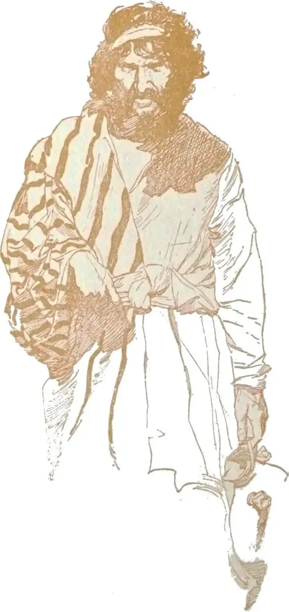
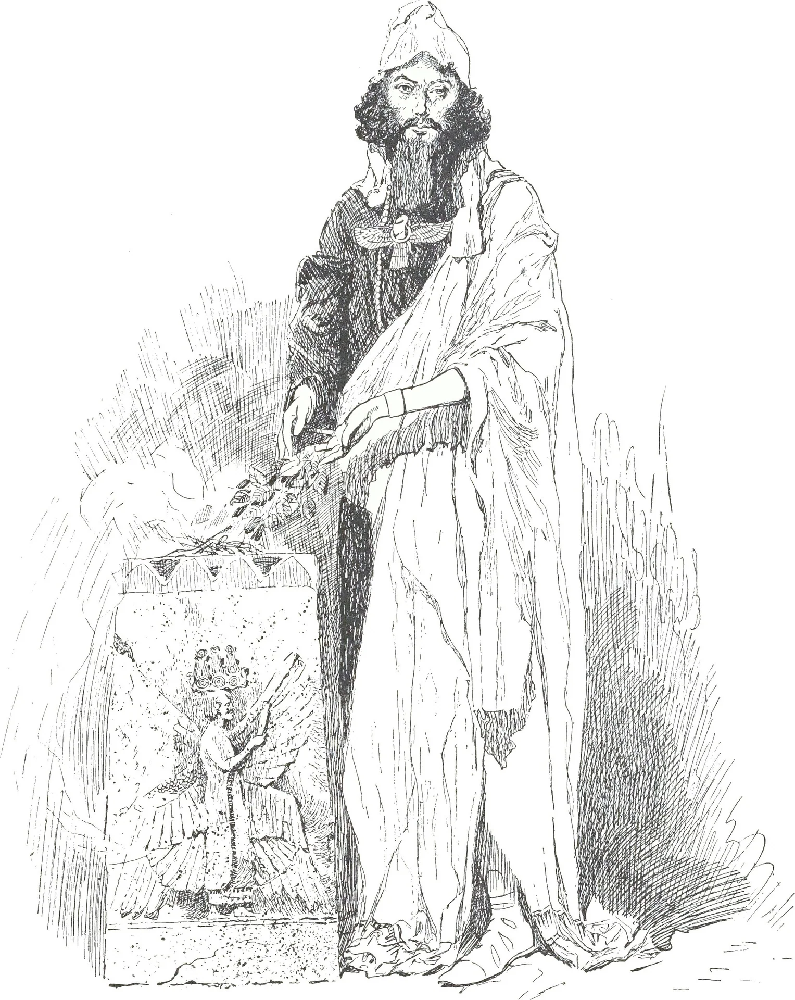
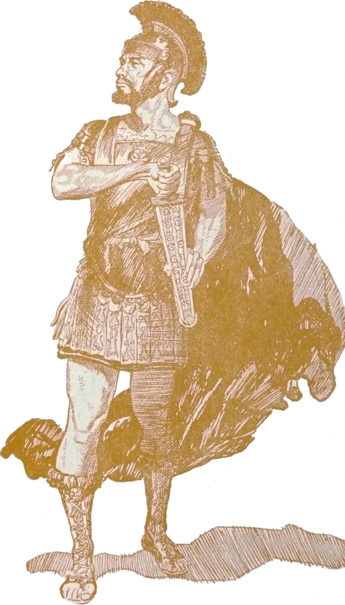

아직 펼치지 않은 카드겨울밤에 읽는 이야기 · 3또 한 사람의 동방박사별을 보고 길을 떠난 박사가 끝내 아기 예수를 만나지 못했어요. 그의 여행은 실패였을까요?선물을 들고 아기 예수님을 찾아간 박사님이 길에서 늦어졌대. 왜 늦었을까?
헤롯이 다스리던 때페르시아에서 예루살렘까지 · 33년의 길
또 한 사람의 동방박사
헤롯이 예루살렘을 다스리던 때, 페르시아의 박사 아르타반도 그 별을 보았어요. 그는 왕께 드릴 보석 세 개를 품고 길을 나섰지만, 길에서 만난 사람들 곁에 멈춰 서느라 늦어져요. 지도 위에서 그의 33년 길을 한 구간씩 따라가 보세요.
별을 보고 아기 예수님을 찾아 떠난 박사님이 한 명 더 있었대. 보석 세 개를 들고! 지도에서 박사님 길을 따라가 보자.
검수 전 시안이에요(기준서 2판). 이 이야기는 헨리 밴 다이크가 성경의 동방박사 이야기를 바탕으로 지은 소설이에요. 장면은 기독교 고전 전자 도서관(CCEL)이 옮겨 적은 본문을 따랐고, 책 속 대사는 이 안내서가 우리말로 옮겼어요. 지도는 이 안내서가 그린 길잡이 그림이에요. 상상은 ‘눈 감고 상상해 보기’에만 썼어요.
시안 확인용카드 단계 미리 보기
1
하늘의 표지
아우구스투스 황제가 여러 왕을 거느리고 헤롯이 예루살렘을 다스리던 때, 페르시아 산속의 도시 에크바타나에 메대 사람 아르타반이 살았어요. 그는 불을 섬기던 오랜 제사장 무리, ‘마기’의 한 사람이었어요.
그해 봄, 아르타반과 친구들은 큰 별 두 개가 물고기자리에서 가까워지는 것을 보았어요. 아르타반은 히브리 사람들의 옛 두루마리를 펼쳐 읽어요. 야곱에게서 한 별이 나오리라는 말씀이었어요(민수기 24장 17절).
그는 집과 가진 것을 모두 팔아 왕께 드릴 보석 세 개를 샀어요. 사파이어, 루비, 진주예요. 친구들은 아무도 함께 가겠다고 하지 않았어요. 아브가루스만 마음으로는 이 순례길의 길동무가 되겠다고 했어요. 동이 트기 전 지붕 위의 테라스에서, 아르타반은 어둠 속에 새로 돋는 푸른 불꽃 같은 별을 보아요.

“이것이 그 표지야. 왕이 오고 계셔. 나는 그분을 맞으러 가겠어.”
『또 한 사람의 동방박사』 「하늘의 표지」 · 이 안내서가 옮김
세 친구 카스파르·멜키오르·발타자르는 바빌론 곁 보르시파의 ‘일곱 구체의 신전’에서 열흘 동안 그를 기다리기로 했어요.
그림 속 마기의 가슴에 달린 날개 달린 둥근 장식을 기억해 두세요. 이야기의 마지막 장에 다시 나와요.
아르타반 박사님은 밤하늘에서 새 별을 찾았대. “왕이 오신다!”
물어보기왕께 드릴 선물로, 너라면 무엇을 챙기고 싶어?
2
33년의 길
아르타반은 가장 빠른 말 바스다를 타고 열흘을 달려요. 약속한 밤, 신전까지 세 시간 남은 곳에서 종려나무 숲을 지나요. 그 그늘 아래 한 사람이 쓰러져 있어요. 늪지에 도는 열병에 걸린, 가난한 히브리 사람이에요.
머물면 친구들을 놓쳐요. 그는 기도해요. 진리와 순결의 하나님, 주님만 아시는 지혜의 길로 저를 이끌어 주소서. 그리고 말에서 내려요. 아래 지도에서 ‘다음 곳으로’를 눌러 그의 길을 따라가 보세요.
‘다음 곳으로’를 눌러 아르타반의 길을 한 구간씩 따라가 보세요.
에크바타나종려나무 숲보르시파베들레헴이집트예루살렘
지도는 이 안내서가 그린 길잡이 그림이에요(실제 거리와 다를 수 있어요).
33년의 길이 예루살렘에서 끝나요. 그의 품에는 아직 진주 하나가 남아 있어요.
기운을 차린 히브리 사람은 아브라함과 이삭과 야곱의 하나님이 자비로운 이의 길에 복을 주시기를 빌어요. 그리고 예언자들의 말을 알려 줘요. 그분은 예루살렘이 아니라 유다 베들레헴에서 나신다고요(미가 5장 2절).
신전 언덕에 닿았을 때 친구들은 이미 떠나고, 벽돌 무더기 아래 쪽지 한 장만 남아 있었어요. “자정이 지나도록 기다렸지만 더는 늦출 수 없네. 왕을 찾으러 가네. 사막을 건너 따라오게.”
친구들을 만나러 가다가, 나무 아래 아픈 사람을 만났어. 아르타반 박사님은 말에서 내렸대.
물어보기아르타반 박사님은 아픈 사람을 어떻게 돌봐 주었을까?
3
아기 하나를 위하여
베들레헴 마을의 길은 텅 비어 있었어요. 한 오두막에서 아기를 안은 젊은 엄마가 말해요. 동방에서 온 낯선 이들이 사흘 전에 다녀갔고, 나사렛 사람이 아기와 그 어머니를 데리고 그날 밤 몰래 떠났다고요. 이집트로 갔다는 소문이 있다고요.
그때 바깥에서 비명이 들려요. 헤롯의 군사들이 아이들을 해치러 왔어요. 아르타반은 문간을 막아서고 대장에게 루비를 보이며 말해요. 여기엔 나 말고 아무도 없고, 나는 이 보석을 받고 나를 편히 두고 갈 지혜로운 대장을 기다리고 있다고요.

“진리의 하나님, 제 죄를 용서하소서. 한 아이의 목숨을 살리려고, 있지 않은 일을 말했습니다.”
『또 한 사람의 동방박사』 「아기 하나를 위하여」, 아르타반의 기도 · 이 안내서가 옮김
대장은 루비를 받고 군사들에게 외쳤어요. “가자! 여기엔 아이가 없다.” 아기 엄마는 기뻐 울며 아르타반을 축복해요. 내 아기를 살려 주었으니 주님께서 그대에게 복을 주시고 지켜 주시고, 그 얼굴빛을 비추시기를요(민수기 6장 24~25절).
내가 아르타반이라면, 왕께 드리려던 세 보석 가운데 무엇을 끝까지 지키고 싶었을까요?
무서운 군인들이 왔어. 아르타반 박사님은 문 앞을 막아서고 빨간 보석을 내밀었대.
물어보기아기 엄마는 그때 얼마나 무서웠을까?
4
왕을 찾았다
33년이 흘렀어요. 늙고 지친 아르타반은 유월절에 예루살렘에 와요. 사람들이 골고다로 몰려가요. 스스로 유대인의 왕이라 했다는 나사렛 예수가 두 강도와 함께 십자가에 달린대요.
성문 쪽으로 힘겹게 걸어가는 그 앞으로, 군사들이 한 소녀를 끌고 가요. 파르티아 상인의 딸인데, 아버지의 빚 때문에 노예로 팔려 가는 길이에요. 소녀는 그의 흰 모자와 가슴의 날개 달린 원을 보고 그가 마기인 것을 알아보아요. 소녀가 그의 발치에 엎드려 무릎을 붙들고 울어요. 불쌍히 여겨 살려 달라고요.
이것이 그의 큰 기회일까요, 마지막 유혹일까요? 아르타반은 알 수 없었다고 해요. 그는 품에서 진주를 꺼내 소녀의 손에 쥐여 줘요. “딸아, 이것이 너의 몸값이다. 왕께 드리려고 간직한 내 마지막 보물이란다.”
하늘이 어두워지고 땅이 흔들려요. 지붕에서 떨어진 기와가 그를 쓰러뜨려요. 소녀의 어깨에 기댄 그의 입술이 누군가에게 대답하듯 움직여요. 언제 제가 주님께서 주리신 것을 보고 먹였습니까? 그때 들려온 목소리가 있었어요.
“가장 작은 이 하나에게 해 준 것이 곧 나에게 해 준 것이란다.”
아르타반에게 들린 목소리 · 『또 한 사람의 동방박사』 「값진 진주」 · 마태복음 25장 40절의 말씀을 이 안내서가 풀어 옮김
아르타반의 창백한 얼굴에 놀라움과 기쁨의 고요한 빛이 번져요. 그의 여행은 끝났어요. 그의 보물은 받아들여졌어요. 또 한 사람의 동방박사가 왕을 찾았어요.
마지막 날, 아르타반 박사님은 진주를 소녀에게 주었어. 그때 “네가 도운 사람이 바로 나였단다” 하는 목소리가 들렸대.
물어보기그 목소리를 들은 박사님은 어떤 얼굴이 되었을까?
눈 감고 상상해 보기
바빌론으로 가는 밤길, 말발굽 소리만 들려요. 종려나무 잎이 바람에 사각거리고, 멀리 신전 언덕이 별빛에 어렴풋해요. 품속 작은 주머니에서 보석 세 개가 달그락거려요. 그때 나무 그늘 아래에서 가쁜 숨소리가 들려요.
눈을 감아 봐. 다그닥다그닥 말이 달려. 나무 아래에서 누가 아파서 끙끙 앓고 있어.
나의 자리
종려나무 아래에서도, 마지막 진주 앞에서도 아르타반은 같은 갈림길에 섰어요. 그때마다 그는 쓰러진 사람에게서 무엇을 보았을까요?
아르타반 박사님은 아픈 사람을 볼 때마다 멈춰 섰어. 그때 박사님 눈에는 무엇이 보였을까?
마음에 닿는 한 줄을 고르거나 직접 써 보세요. 한 줄을 남기면 이 자리의 도장이 찍혀요. 이 기기에만 저장돼요.
더 깊이
궁금한 칸만 펼쳐 읽어도 괜찮아요.
알고 보면
지어낸 넷째 박사 아르타반은 성경에 나오지 않아요. 미국의 목사이자 작가 헨리 밴 다이크가 마태복음의 동방박사 이야기(마태복음 2장)를 바탕으로 지은 인물이에요.
세 사람, 세 이름 마태복음은 박사들이 몇 명이었는지 적지 않아요. 서방 교회는 황금·유향·몰약 세 가지 선물을 따라 세 사람으로 여겼고, 동방 교회 전통은 열두 사람으로 셌어요. 카스파르·멜키오르·발타자르 같은 이름은 8세기 무렵의 기록에 처음 보여요.
이야기가 온 밤 밴 다이크는 이 이야기가 어디서 왔는지 모르겠다고, 아마 허공에서 왔을 거라고 적었어요. 오래 앓던 해의 잠 못 드는 밤에 빛 가운데 선 아르타반을 보았고, 그 뒤로는 그를 한 걸음씩 따라가며 적었을 뿐이라고요.
거짓말에 대하여 사람들은 작가에게 왜 넷째 박사가 거짓말을 하게 했느냐고 여러 번 물었어요. 밴 다이크는 뒤에 나온 판의 머리말에, 자기가 시킨 것이 아니라 아르타반이 어쩔 수 없어서 스스로 그렇게 말했다고 적었어요.
노래 한 곡 밴 다이크는 찬송 「기뻐하며 경배하세」(Joyful, Joyful, We Adore Thee)의 노랫말도 썼어요. 베토벤 교향곡 9번 마지막 악장의 가락에 붙여 불러요.
기록마다 다른 점
처음 나온 해 자료마다 1892년, 1895년, 1896년으로 달라요. 하퍼 앤 브러더스가 펴낸 책의 판권 면에는 1895년이 적혀 있어요.
이 카드의 그림 그림은 1920년 판 책에 존 플래너건이 그린 그림이에요. 그림마다 이야기 속 누구를 그렸는지는 적혀 있지 않아요. 지도는 이 안내서가 그린 길잡이 그림이라 실제 거리와 달라요.
읽고 보기
확인한 날 · 2026년 11월 18일 · 바뀌기 쉬운 정보라 정기적으로 다시 확인해요
이 이야기는 저작권이 끝나 영어 원문을 누구나 읽을 수 있어요. 기독교 고전 전자 도서관(CCEL)에는 장마다 나뉜 본문이 있고, 인터넷 아카이브에는 1896년 그림책 판이 통째로 스캔되어 있어요.
33년의 길 끝까지 금박
에크바타나에서 예루살렘까지 여섯 곳을 모두 따라가면 카드에 금박이 입혀져요.
에크바타나부터 예루살렘까지 여섯 곳 따라가기
세 보석 가운데 채색
둘 가운데 하나만 해도 카드가 채색돼요.
내가 아르타반이라면 끝까지 지키고 싶은 보석 고르기
아이와 함께 ‘영화처럼 보기’를 끝까지 보기
근거 보기 (9)
- CCEL: 「하늘의 표지」 — 아우구스투스와 헤롯의 때, 에크바타나의 메대 사람 아르타반, 불 섬기는 마기, 물고기자리의 두 별, 발람의 예언, 세 보석, 아브가루스, “It is the sign”, 보르시파에서 열흘
- CCEL: 「바빌론 강가에서」 — 말 바스다, 150파라상 열흘, 신전까지 세 시간, 종려나무 숲의 히브리 사람(열병), 기도, 말에서 내림, 베들레헴 예언, 쪽지, 사파이어를 팔 계획
- CCEL: 「아기 하나를 위하여」 — 빈 마을, 사흘 전의 낯선 이들, 이집트 소문, 헤롯의 군사, 루비, 아르타반의 말과 기도, 대장의 말, 엄마의 축복
- CCEL: 「슬픔의 숨은 길」 — 이집트·알렉산드리아·헬리오폴리스, 굶주린 이·헐벗은 이·병든 이·갇힌 이
- CCEL: 「값진 진주」 — 33년, 유월절의 예루살렘, 골고다, 파르티아 상인의 딸, 큰 기회인가 마지막 유혹인가, 몸값, 지진과 기와, 목소리, 마지막 문장
- 인터넷 아카이브: 『The Story of the Other Wise Man』(1895·1899 판권) — 작가의 머리말(이야기가 온 밤, 거짓말에 대하여), 판권 면 1895
- 브리태니커: Magi — 마태복음은 수를 적지 않음, 서방은 세 선물을 따라 셋, 동방은 열둘, 이름은 8세기 무렵 기록
- 하이머너리: Joyful, Joyful, We Adore Thee — 노랫말 헨리 밴 다이크(1907), 가락 HYMN TO JOY(베토벤)
- 위키미디어 공용: 1920년 판 31·85쪽 그림 정보(존 플래너건, 퍼블릭 도메인)
그림·사진·소리 출처
‘처음 만나는 기독교 문화’의 깊은 카드예요. 실제 인물의 사진은 쓰지 않았어요. 카드 단계와 남긴 글은 이 기기에만 저장돼요.